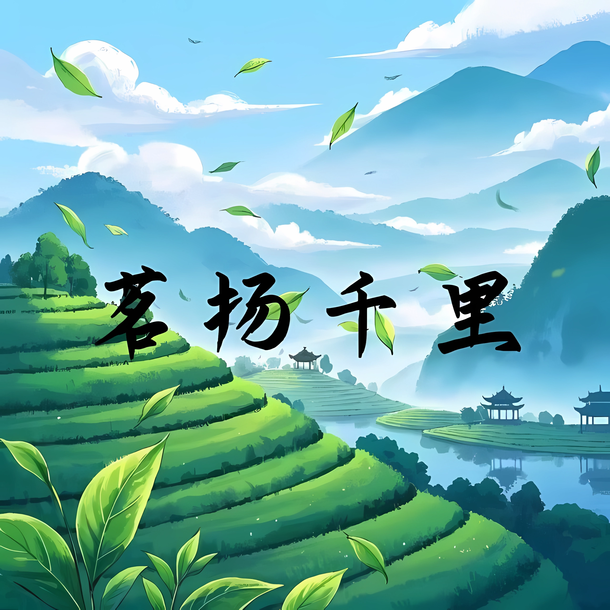

中国茶文化历经千年积淀，如江河奔涌生生不息。自云岭之巅苍劲虬结的千年古茶树，至江南烟雨间层叠如画的碧绿茶园，每一片灵芽都浸润着山川的呼吸。绿茶如初春晨露，以龙井之清雅、碧螺春之鲜灵，舒展着草木本真的纯净；红茶似暖阳入盏，正山小种的松烟香与祁门红的蜜糖韵，在喉间酿出温润的甘醇；乌龙茶若月下听涛，凤凰单枞的花果交响与武夷岩茶的岩骨花香，演绎着半发酵的曼妙诗篇；黑茶则是时光窖藏的艺术，安化茯砖的金花璀璨与普洱熟茶的陈韵绵长，沉淀着岁月馈赠的厚重；白茶犹带山林清气，白毫银针的素雪清姿与寿眉的恬淡悠然，勾勒出返璞归真的东方美学。
这片神奇的东方树叶，不仅是杯盏中的天赐琼浆，更是流淌在民族血脉里的生活哲思。茶烟起处，可照见陆羽《茶经》里天人合一的智慧，可触摸丝绸之路驼铃中的文明对话，可品味东坡「且将新火试新茶」的诗意栖居。而今我们以「茗扬千里」为舟楫，借数字藏馆收藏宋代建盏的星辰釉色。这里既有茶马古道的数据复原，也有现代茶席的美学演绎，更将揭开茶氨酸安神、茶多糖降脂的科学密码，让古老智慧与当代生活温柔相拥。一盏茶，终将泡开世界的期待。
公众号 茗扬千里。
